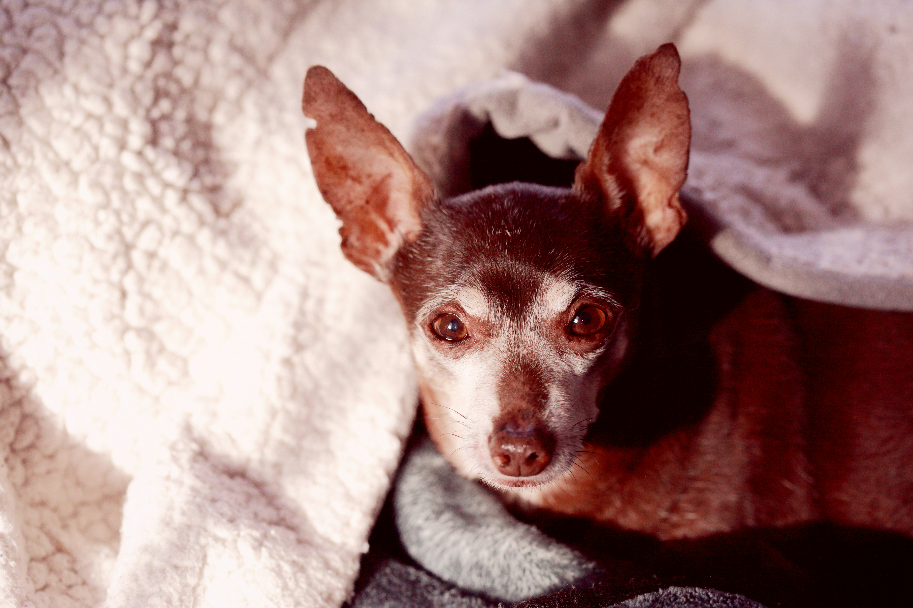
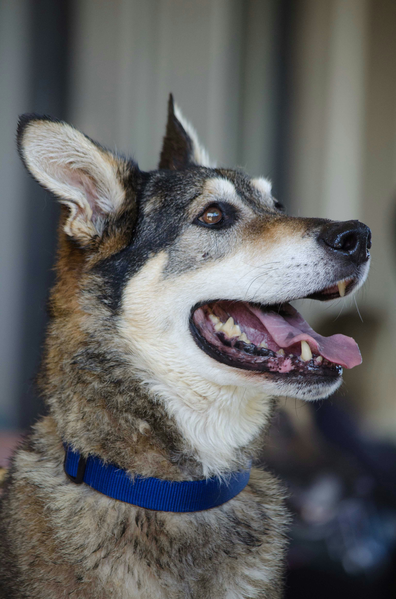
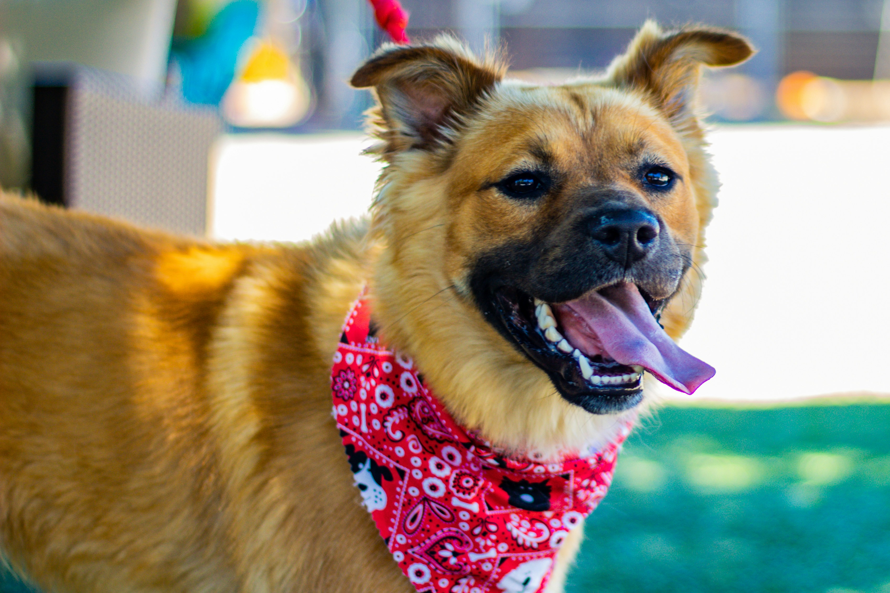

¡Transitá una mascota!
Esta iniciativa comenzó en 2015, cuando un grupo de personas comprometidas con la defensa de los animales se unió para ser un nexo con personas que tenían la voluntad de dar una mano en la recuperación de animales.

Ayudamos a establecer un nexo entre organizacions defensoras de animales que necesitan hogares transitorios para animales en adopción y personas dispuestas a ofrecer su hogar y cuidados.


Encuentros
Semestralmente se organizan en un lugar pactado encuentros con las personas dispuestas a transitar, integrantes de asociaciones y adoptantes para que brinden sus experiencias.